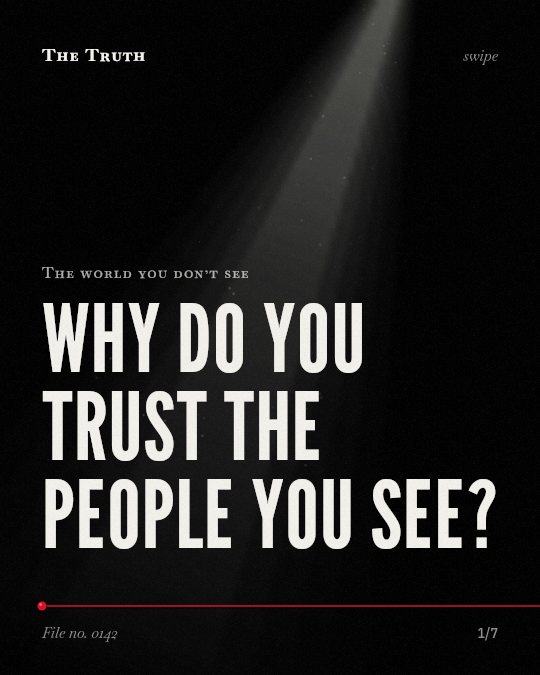

The world you don’t see
Why do you trust the people you see?

Bias does not always dictate your trust.
While implicit biases influence many social interactions, some patient dissatisfaction is independent of those biases.
Established. Several studies combined, or official data. The evidence is mixed.
What the research found
Oxytocin causes intergroup bias because it motivates in-group favoritism and, to a lesser extent, out-group derogation.
“Results show that oxytocin creates intergroup bias because oxytocin motivates in-group favoritism and, to a lesser extent, out-group derogation.”
Randomized trial, 2011. De Dreu et al., Proceedings of the National Academy of Sciences of the United States of America.
Latino patients gave clinicians lower ratings than did other groups (P <. 0001), and this did not depend on the clinicians' implicit bias (P = . 98).
“Latino patients gave the clinicians lower ratings than did other groups (P <. 0001), and this did not depend on the clinicians' implicit bias (P = . 98).”
Observational study, 2013. Blair et al., The Annals of Family Medicine.
An individual's economic decisions to trust is predicted by that person's bias in implicit race attitude.
“We demonstrate that race disparity in both an individual's explicit evaluations of trustworthiness and, more crucially, his or her economic decisions to trust is predicted by that person's bias in implicit race attitude.”
Study, 2011. Stanley et al., Proceedings of the National Academy of Sciences.
Health providers demonstrated negative implicit biases toward women with lower educational attainment when making referrals to multidisciplinary care.
“When making referrals to multidisciplinary care, HCPs demonstrated negative implicit biases toward women with lower educational attainment.”
Systematic review, 2021. Kavchak et al., Pain Medicine.
Oncologist implicit bias indirectly predicted less patient confidence in recommended treatments, and greater perceived difficulty completing them, through its impact on oncologists' communication.
“In addition, oncologist implicit bias indirectly predicted less patient confidence in recommended treatments, and greater perceived difficulty completing them, through its impact on oncologists' communication (as rated by both patients and observers).”
Study, 2016. Penner et al., Journal of Clinical Oncology.
The mechanics of trust.
Oxytocin motivates in-group favoritism. Implicit race attitudes predict economic trust. However, some factors, like specific patient ratings, occur regardless of a provider's implicit bias.
The complexity of human perception.
That may be why your feelings of trust are rarely simple. They are shaped by biology, social systems, and factors that your conscious biases cannot explain.
This part is our reading of the evidence, not a finding.
A quiet waiting room.
You sit in a chair with fluorescent lights overhead. You wait to speak with a professional who looks nothing like you. You feel a slight distance in the air.
The honest summary
The evidence shows that implicit biases significantly shape social and economic trust and influence healthcare interactions, but they do not always account for all patient perceptions.
One study shows that Latino patients' lower ratings of clinicians were not dependent on the clinicians' implicit bias.
What else is shaping your trust?
Sources
- De Dreu CK, Greer LL, Van Kleef GA, Shalvi S, Handgraaf MJ (2011). Oxytocin promotes human ethnocentrism. Proceedings of the National Academy of Sciences of the United States of America. Randomized trial, cited 380 times.
- Alicia J. Emerson Kavchak, Riley H. Oxendine, Lauren Chandler et al. (2021). Patient and Provider Attitudes, Beliefs, and Biases That Contribute to a Marginalized Process of Care and Outcomes in Chronic Musculoskeletal Pain: A Systematic Review—Part I: Clinical Care. Pain Medicine. Systematic review, cited 21 times.
- Irene V. Blair, John F. Steiner, Diane L. Fairclough et al. (2013). Clinicians' Implicit Ethnic/Racial Bias and Perceptions of Care Among Black and Latino Patients. The Annals of Family Medicine. Observational study, cited 407 times.
- Louis A. Penner, John F. Dovidio, Richard Gonzalez et al. (2016). The Effects of Oncologist Implicit Racial Bias in Racially Discordant Oncology Interactions. Journal of Clinical Oncology. Study, cited 346 times.
- Damian A. Stanley, Peter Sokol‐Hessner, Mahzarin R. Banaji et al. (2011). Implicit race attitudes predict trustworthiness judgments and economic trust decisions. Proceedings of the National Academy of Sciences. Study, cited 259 times.
Also read for this file, not quoted
This file was researched and drafted by software, then checked by rules a model cannot talk its way around: each quote above was matched word for word against the paper, and every number had to appear in it. How files are made.